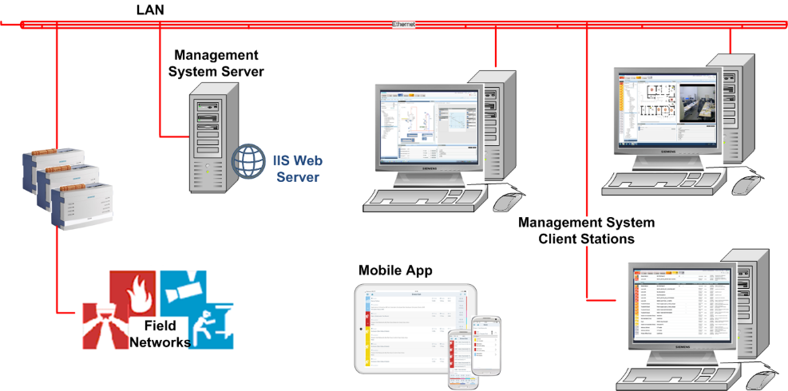

Overview of the Mobile App
The Desigo CC app is a mobile app for smartphones and tablets (Android and iOS) that enables an operator to monitor and interact with a connected Desigo CC installation. For a description of the mobile app functions see the operator step by step section.
The mobile app connects to Desigo CC through an IIS web server, over the internet (Wi-Fi or 3G/4G) or over an intranet (WLAN). See Mobile App Deployments for more information about possible configurations. Operators sign into the app with the same credentials that they use for their client stations on the site.
Once the app user is authenticated, the server sends to the Desigo CC app only the information and commands which that user is authorized to see and execute, based on the user's security profile. The capabilities of the app are also constrained by the station security profile (configured in Desigo CC ) for anonymous web clients.


Remotely handling safety and security alarms over the internet may pose risks, and may be prohibited by your company's security policies, or by national/local laws, regulations, safety standards, or codes of practice. Carefully check whether using the mobile app for handling Desigo CC events is permitted in your particular situation.
For full information about how to configure the mobile device and Desigo CC to function securely with the app, see the section on Security.